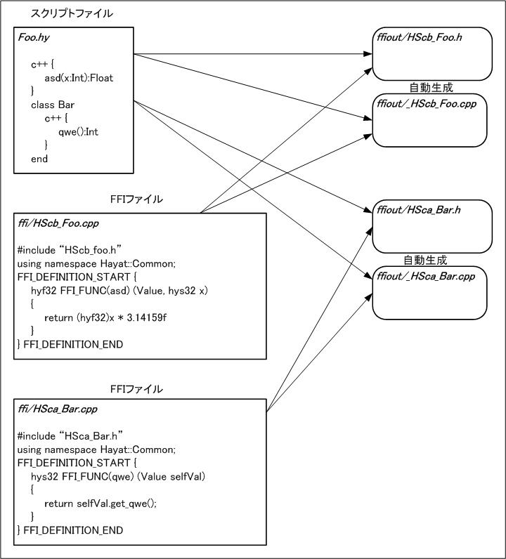

Hayatリファレンスマニュアル トップページ
FFI
Foreign Function Interface.
HayatとC++関数の間のインターフェース。
宣言
各クラス定義中に、そのクラスC++関数を呼び出すFFIを宣言できる。
class Foo
c++ {
FFI宣言
}
end
FFI宣言
- メソッド名と、その引数、引数の型、戻り値の型を指定する事ができる。
- 型は省略する事ができる。
- 可変長引数を指定でき、
... と記述する。
- デフォルト値を指定する事ができる。
func() |
引数無し、戻り値の型は不定 |
func(x) |
引数1個で型は不定、戻り値の型は不定 |
func(x:Int) |
Intの引数1個、戻り値の型は不定 |
func():Float |
引数無し、戻り値の型は Float |
func(x:Bool):NilClass |
Boolの引数1個、戻り値は nil 固定 |
func(x:Int, y:Float):Bool |
Intの引数とFloatの引数、戻り値は Bool |
func(...):Int |
引数の個数は不定、戻り値は Int |
func(x:Int):Float |
Intの引数1個、戻り値は Float |
func(x:Int = 0):Int |
Intの引数にデフォルト値 0 を設定 |
func(x:Int, y = 5.0) |
型不定の引数 y にデフォルト値 5.0 を設定 |
C++クラスの内包
Hayatクラス中に、C++クラスを1つ内包する事ができる。
2つ以上内包する事はできない。
インスタンスを生成すると、C++インスタンスを内部に持つ形で生成される。
// Hayatのクラス Foo は、C++のクラス Bar を内包する。
class Foo
c++ Bar {}
end
Hayatの継承とC++の継承
C++のクラスが継承を使っている場合、それに対応するHayatクラスも
同じように継承していなければならない。
C++クラスが以下のような継承関係を持つとする。
class A;
class B : public virtual A;
class C : public virtual A;
class D : public B, public C;
この時、A,B,C,D をそれぞれ内包するHayatクラス HA,HB,HC,HD は、
以下のような継承関係にならなければならない。
class HA
c++ A {}
end
class HB < HA
c++ B {}
end
class HC < HA
c++ C {}
end
class HD < HB,HC
c++ D {}
end
このような継承をしていない場合の動作は保証されない。
これをチェックする機構は存在しないので、十分注意する必要がある。
自動生成ファイル
FFIは HSca_クラス名.cpp または HScb_ファイル名.cpp という
C++ ソースファイルにプログラムする。
class宣言の内部に書いたFFIは HSca_クラス名.cpp に、
class宣言の外に書いたFFIは HScb_ファイル名.cpp に対応する。
コンパイラは HSca_クラス名.cpp(またはHScb_ファイル名.cpp)
の記述を読み込み、それに合わせてファイルを自動生成する。
通常は ffiout ディレクトリ内に生成する。
スクリプトをコンパイルすると、コンパイラが
HSca_クラス名.h(HScb_ファイル名.h) というヘッダファイルと
_HSca_クラス名.cpp(_HScb_ファイル名.cpp) という C++ ソースファイルを
自動生成する。
_HSca_クラス名.cpp(_HScb_ファイル名.cpp) 内には、プログラマが
記述した関数とHayatエンジンとの橋渡しをする関数が自動生成される。
HSca_クラス名.cpp(HScb_ファイル名.cpp) を基に生成するので、これが無いとエラーになる。
ファイル名先頭のアンダースコア _ に注意。
先頭にアンダースコアありのcppファイルはコンバータの自動生成であり、
先頭にアンダースコア無しのcppファイルはプログラマが記述する。

インナークラス
インナークラスの自動生成ファイル名は、クラス名間を "__" でつなげた
ものとなる。
class Foo
class Bar
c++ Bar {}
end
end
このようなクラスがあった場合、自動生成ファイル名は
HSca_Foo__Bar.h と _HSca_Foo__Bar.cpp になる。
FFIの記述
class Foo のFFIの記述を例とする。
ソースファイル
ソースファイルは、 ffi/HSca_Foo.cpp となる。
これをプログラマが記述する。
まず #include "HSca_Foo.h" とする。このヘッダファイル中にほとんどの必要な定義がされている。
定義マクロ (1)
マクロを用いて、各関数を定義する。
| Hayatでの記述 |
C++での記述 |
func() |
Value FFI_FUNC(func) (Value selfVal, void) |
func(x) |
Value FFI_FUNC(func) (Value selfVal, Value x) |
func(x:Int) |
Value FFI_FUNC(func) (Value selfVal, s32 x) |
func():Float |
f32 FFI_FUNC(func) (Value selfVal, void) |
func(x:Bool):NilClass |
void FFI_FUNC(func) (Value selfVal, bool x) |
func(x:Int, y:Float):Bool |
bool FFI_FUNC(func) (Value selfVal, s32 x, f32 y) |
func(x:Int):Float |
f32 FFI_FUNC(func) (Value selfVal, s32 x) |
インスタンスメソッド呼出しの場合は、第1引数selfValにインスタンスが来る。
クラスメソッド呼出しの場合は、第1引数selfValにクラスが来る。
stdlibにおけるHayatクラス名とC++型名の対応
| Hayat |
C++ |
Int |
s32 |
Float |
f32 |
Bool |
bool |
String |
const char* |
Object |
Object* |
Symbol |
SymbolID_t |
Class |
HClass* |
List |
ValueList* |
Array |
ValueArray* |
Hash |
Hash* |
StringBuffer |
StringBuffer* |
Thread |
Thread* |
Exception |
Exception* |
NilClass (戻り値の型として) |
void |
| 無し |
Value |
定義マクロ (2)
Hayatメソッド名がC++で記述できない名前の場合には、
FFI_FUNCマクロの替わりに別のマクロを使用する。
| Hayatメソッド名 |
C++マクロ |
func |
FFI_FUNC(func) |
func? |
FFI_FUNC_Q(func) |
func! |
FFI_FUNC_E(func) |
func= |
FFI_FUNC_S(func) |
その他非半角英数メソッド名 |
FFI_FUNC_X(ascii16進表記) |
例)
c++ {
include?():Bool
"=="(x):Bool
}
bool FFI_FUNC_Q(include) (Value selfVal)
bool FFI_FUNC_X(3d3d) (Value selfVal, Value x)
関数の自動生成
プログラマが関数を定義しない場合、C++クラスに同名の関数があるものとして
自動的にそれを呼び出すコードが _HSca_クラス名.cpp 内に生成される。
class Foo
c++ Bar {
func1(Float x):Int
func2(Bool b):String
}
end
Hayatにて上記の記述をした場合で、HSca_Foo.cpp に func1,func2 を
記述しなかった場合には、次の記述をしたものとほぼ同等の結果となる。
s32 FFI_FUNC(func1) (Value selfVal, f32 x)
{
Bar* self = selfVal.toCppObj<Bar>();
return self->func1(x);
}
const char* FFI_FUNC(func2) (Value selfVal, bool b)
{
Bar* self = selfVal.toCppObj<Bar>();
return self->func2(b);
}
複雑なメソッドの記述
可変引数のメソッドや、例外を投げるメソッド、
スレッドを操作するメソッドなど、単純な関数呼出しでは対応できない場合は、
FFI_FUNC では記述できない。
替わりに DEEP_FFI_FUNC を使用する。
HSca_クラス名.cpp に DEEP_FFI_FUNC が定義されている場合、コンパイラ
は _HSca_クラス名.cpp 中に橋渡し関数を自動生成しない。
DEEP_FFI_FUNC で記述するFFIは、橋渡し関数が行なっているような
スタック操作等をプログラマが記述しなければならない。
DEEP_FFI_FUNCで定義する関数の引数は (Context* context, u8 numArgs) で、
戻り値は void である。
contextに必要な情報が全て入っている。
スレッド上で動作しているなら、 context->thread がNULLではない
値になっている。
スタックトップには、selfの値が入っている。
インスタンスメソッド呼び出しなら、インスタンスが、
クラスメソッド呼び出しならクラスが入っているので、
どちらかを判定するにはselfのtypeが HC_Class かどうかで判定できる。
Value selfVal = context->pop();
if (selfVal.type == HC_Class) クラスメソッド呼出し
numArgs個の引数が、context内のstackに積まれている。
左の引数から順番に積まれるので、スタックの2番目は一番右の引数になる。
Hayat関数の戻り値は、引数を全部popした状態のスタックにpushしておく。
詳細については、stdlibのFFIなどを参考にして欲しい。
複雑なメソッドの記述 (2)
実は、DEEP_FFI_FUNC ではなく FFI_FUNC でも context を取得する方法は
ある。
Context* VM::getContext(void);
この関数を使って context を取得すれば、それを通して
例外を投げたりスレッドを操作したりする事はできる。
(可変長引数は context だけでは操作できない)
但し、将来的には getContext() の仕様が変更される可能性
が高いので、使用は推奨されない。
ガーベジコレクション対応
C++クラス内でHayatインスタンスを扱うような場合、garbage collection の
対象となるようにしなければならない。
HSca_クラス名.cpp 内で FFI_GCMARK_FUNC() を定義する必要がある。
ArrayやHashなどのコンテナクラスをC++レベルで実現する場合は必須。
Hayatのガーベジコレクションはマーク＆スイープ方式である。
GCクラスの以下の2つの関数を使用し、必要なオブジェクトにマークを
つければ良い。
void GC::markValue(Value&);
void GC::markObjP(Object**);
詳細については、stdlibのFFIなどを参考にして欲しい。
C++からHayatメソッドを呼び出す
即実行させる場合と、スレッドの動作をHayat VMに任せる場合がある。
即実行させる場合
- Contextオブジェクトを生成、初期化する。
- 即実行の関数を呼び出す。
- 戻り値をスタックから取り出す。
- ContextオブジェクトをC++から参照しない事をHayatに通知する。
Contextオブジェクトは、GCに回収される。
using namespace Hayat;
using namespace Hayat::Engine;
Context* context = gPackage.createContext(myBytecode.mainClass());
context->push(引数);
context->execMethod(インスタンス, メソッドのシンボル, 引数の個数);
Value retval = context->pop();
gPackage.releaseContext(context); // C++からのContextオブジェクト使用終了宣言
即実行のための関数
execMethod |
メソッドの実行 |
execMethod_ifExist |
メソッドを呼び出す事が可能なら実行 |
execBytecodeTop |
バイトコードの先頭からの実行 |
スレッドで動かす場合
- Contextオブジェクトを生成、初期化する。
- Threadオブジェクトを生成、初期化する。
- ContextとThreadを結びつける。
- Contextをメソッド呼び出し開始状態にする。
- 場合によって、ContextオブジェクトをC++から参照しない事をHayatに通知する。
Contextオブジェクトは、Threadが終了してどこからも参照されなくなると、GCに回収される。
- Thread実行開始。
1フレームに1回、ThreadManagerを走らせる。
- 必要なら、Threadの実行が終わるのをstate()でチェックする。
using namespace Hayat;
using namespace Hayat::Engine;
Context* context = gPackage.createContext(myBytecode.mainClass());
ThreadID_t threadID = gThreadManager.createThread();
Thread* pThread = gThreadManager.id2thread(threadID);
pThread->initialize(context);
context->push(引数);
context->push(インスタンス);
context->methodCall(メソッドのシンボル, 引数の個数);
pThread->start();
gPackage.releaseContext(context); // C++からのContextオブジェクト使用終了宣言
// 1フレームに1回実行
gThreadManager.exec1tick();
// 1フレームに1回チェック
Thread* pThread = gThreadManager.id2thread(threadID);
if (pthread->state() == TERMINATED) 終了 else まだ実行中
メソッド開始状態にする関数
methodCall |
インスタンスメソッドの開始 |
sMethodCall |
暗黙selfのインスタンスメソッド、クラスメソッド、組み込み関数の開始 |
callBytecodeTop |
バイトコードの先頭からの開始 |
インスタンスについて
Hayatリファレンスマニュアル トップページ